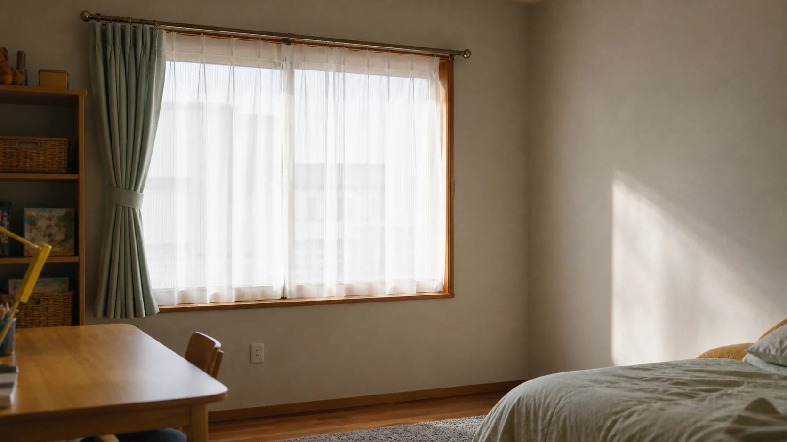
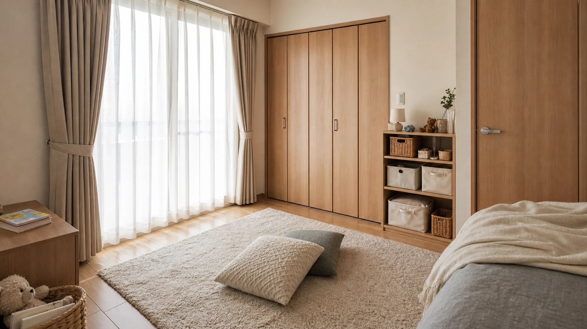
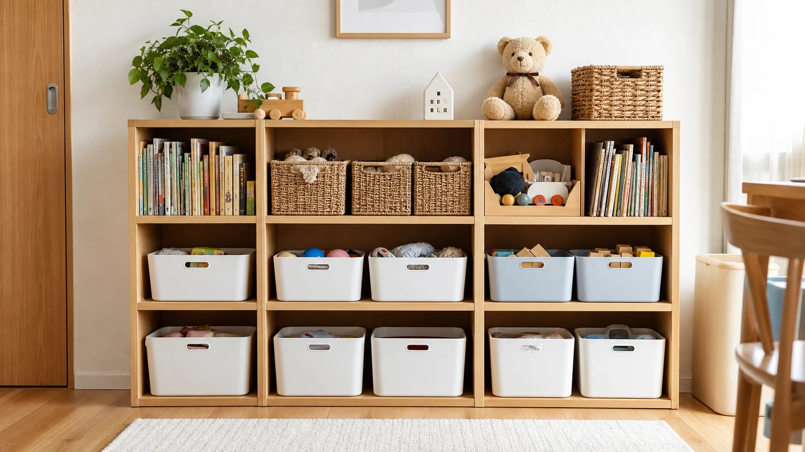

音や光に敏感だったり、予定の変化に不安を感じやすかったりする子どもにとって、家の中に落ち着きを取り戻せる場所が助けになる場合があります。この記事では、特定の診断や治療を前提とせず、発達特性のある子どもが安心して過ごせる「安心ゾーン」を作る考え方を、環境調整の選択肢の一つとして紹介します。
私は以前、発達特性のある子どもたちを中心とした学習塾の運営に携わっていました。本記事では、一般に「発達障害」と表現されることのある特性について、個々の違いや暮らしの工夫に目を向けるため、「発達特性」という言葉を用います。
1. その子にとっての「安心ゾーン」とは
本記事でいう「安心ゾーン」とは、その子が気持ちの高ぶりを感じたときに、落ち着きを取り戻すために過ごせる場所のことです。特別な部屋を新設する必要はなく、家の中の一角に、その子にとって心地よいと感じられる環境を整えることから始められます。
大切なのは、この場所が自分で選んで安心するために使う場所である、という位置づけです。
2. 刺激を強く感じる子もいる
発達特性のある子どもの中には、音、光、肌触り、においなどの感覚刺激を、周囲の人よりも強く、あるいは異なる形で感じる子がいます。これは本人のわがままや性格の問題ではありません。発達障害情報・支援センターの公的資料でも、感覚の感じ方には個人差があり、環境を調整する支援が紹介されています。
梅永雄二監修・著『よくわかる！自閉症スペクトラムのための環境づくり──事例から学ぶ「構造化」ガイドブック』（Gakken、2016年）では、こうした特性に配慮した環境の整え方について、具体的な事例をもとに紹介されています。同書で扱われる「構造化」とは、物理的な環境、時間の流れ、活動の内容を、その子にとって分かりやすく示す工夫のことを指します。
すべての子どもに同じ対応が当てはまるわけではなく、感じ方には大きな個人差があることを前提に、その子自身の様子を見ながら工夫を試すことが大切です。

3. 音・光・物の多さを整える
家庭でできる環境調整の工夫として、次のようなものが挙げられます。
- 音：テレビや会話の音量、生活音の重なりに配慮する。必要に応じて、静かに過ごせる時間や場所を用意する。
- 光：強い直射日光や、点滅する照明を避け、落ち着いた明るさの照明を選ぶ。
- 物の多さ：視界に入る物の量を減らし、必要な物が分かりやすく整理されている状態を保つ。
これらは発達特性のある子どもに限らず、子どもや大人にとっても過ごしやすさを考える際の工夫になります。「刺激の総量を減らし、見通しを持ちやすくする」という考え方を、その人に合う範囲で試します。

4. 本人が選べる一角と見通しをつくる
安心ゾーンをつくる際は、次のような点を意識するとよいでしょう。
- 家の中の比較的静かで刺激の少ない場所を選ぶ：リビングの一角や、寝室の隅など、既存のスペースを活用できます。
- クッションや布など、肌触りの心地よい物を置く：本人が心地よいと感じる素材を選ぶことが大切です。
- 「ここに行けば落ち着ける」という見通しを持たせる：場所を固定し、いつでも使えるようにしておくことで、本人が自分で気持ちを整理する手がかりになります。
工事を伴う大掛かりな改修をしなくても、家具の配置や小さな工夫から始められます。
5. 家族だけで抱え込まない支え方
発達特性のある子どもの子育てを、親だけで抱え込まないことも大切です。本人と保護者の希望に沿って、親族や支援機関、医療・療育の専門家などと、無理のない支え方を話し合いましょう。
また、家族で特性や安心できる関わり方を共有することと、特定の親族に経済的・物理的な支援を求めることは別です。本人と保護者の希望を中心に、無理のない協力の範囲を確認しましょう。

6. 安心ゾーンは落ち着きを取り戻すための環境調整
安心ゾーンは、本人が必要なときに選べる環境調整の選択肢の一つで、気持ちを整えて次の活動に向き合う助けになる場合があります。感覚の感じ方や必要な配慮は、一人ひとり異なります。この記事で紹介した工夫はあくまで一般的な考え方であり、その子に合った方法を見つけるためには、本人の様子をよく観察しながら、必要に応じて医療・療育の専門家に相談することをおすすめします。